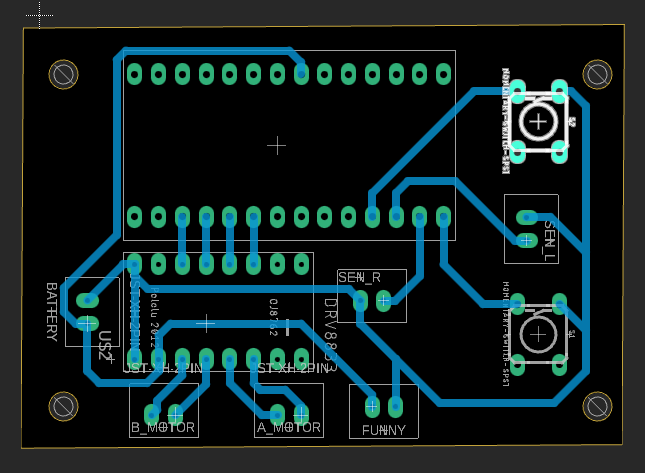

soph week 3/24 - 3/28
slow week since my partner focused more on the rov than our sumobot, so i went back to working on my zeromouse project.
sumobot updates
during our blog post presentations, my friend miles spotted an issue with my button wiring. turns out i was using a faulty button footprint with incorrect wiring. after switching to the right footprint and fixing the connections, the pcb shouldn’t have any shorts now.
jonas (my partner) also printed the pcb holder for our sumobot, so i’ll be milling the board soon.
zerømouse
in my previous blogpost on the zeromouse, there were a bunch of errors that i had to deal with this week
size is too short, standoffs aren't aligned properly, and the sensor holder is too small.
i started by resizing and cleaning up the frame design to then fix these problems
old sketch vs new sketch. old sketch on the left.
i also tried a new standoff design since i didn’t like the bulky filled lines from before, while hopefully fixing the alignment issues.
the sensor mount isn’t added yet, but i’m using a thicker shell to avoid the structural problems from last time.
hopefully next week i’ll have a test body and wheels for the sumobot, and i can test print this new mouse shell.